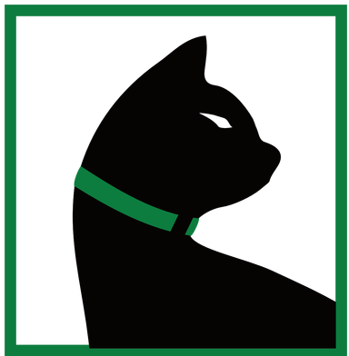

Work Experience

The Computer Action Team
Desk Operations Group
10/19 - Present Portland, OR
- Assist students, staff, and faculty with technical issues related to VPN, VNC, RDP, SSH, and FTP. Troubleshoot issues related to SOLIDWORKS, MATLAB, Windows & Linux disk quotas, mapping network drives, and network connectivity.
- Schedule Computer Action Team (CAT) volunteers to staff the help desk for the College of Engineering and ensure users have adequate support
- Train new volunteers on help desk policies and procedures; mentors volunteers on professional customer service practices
- Develop and maintain internal scheduling software.
- Serve as a Human Interaction Support Specialist within the CAT, ensuring volunteers have a safe and productive work environment.
- Build and maintain internal and student-facing web sites as a member of the web development team.

Novus Labs
Quality Assurance Technician
06/21 - 09/21 Hillsboro, OR
- Performed interoperability testing for leading products by Google, Amazon, HP, and Roku.
- Writes technical issue and bug reports.
- Executes test plans across multiple platforms and systems.
- Perfomed stress testing on client products.
- Communicated with clients to create custom test plans.

The Home Depot
Head Cashier
11/17 - 10/19 Beaverton, OR
- Lead team of cashiers as point of contact. Resolved customer issues and complaints.
- Managed cashiers' schedules to ensure deadlines were met.
- Managed cashiers to ensure sales and accuracy quotas were met.
- Trained new associates on point of sale and customer interaction.
- Ensured equipment and point of sale systems were properly maintained and functional.
Volunteer Experience

The Mayor's Youth Advisory Board
Board Member
06/14 - 06/16 Beaverton, OR
- Helped organize youth events in Beaverton including Youth Summit, Voter's Forum, Adopt-a-Road cleanup, Maryville Nursing Home senior event, and held a booth at annual tree lighting festival.
- Attended the National League of Cities as a youth delegate.
- Acted as emcee for Youth Summit. Presented at the 2015 Voters' Forum.

Youth Robotics Lab Assistant
Mentor / Safety Director
06/13 - 08/15 Portland, OR
- Helped create and enhance the lab experience for younger students.
- Encouraged critical and creative thinking.
- Developed prototyping exercises.
- Presented to peers on project development and progress.